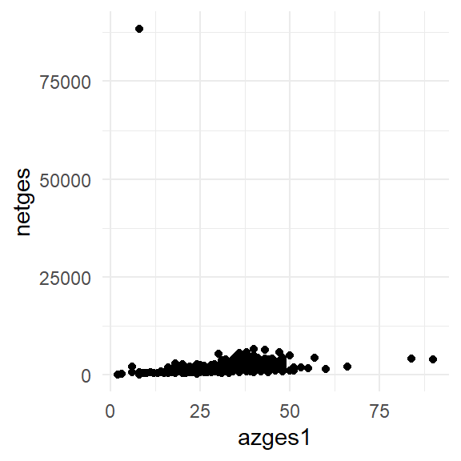
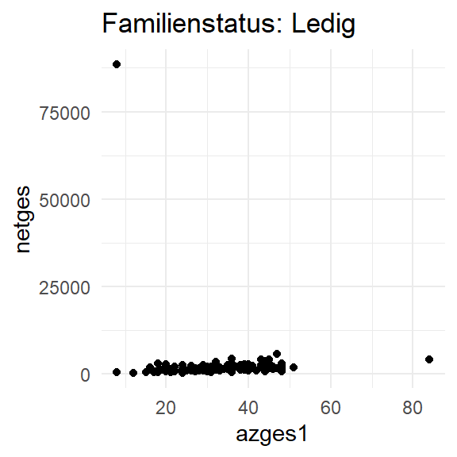
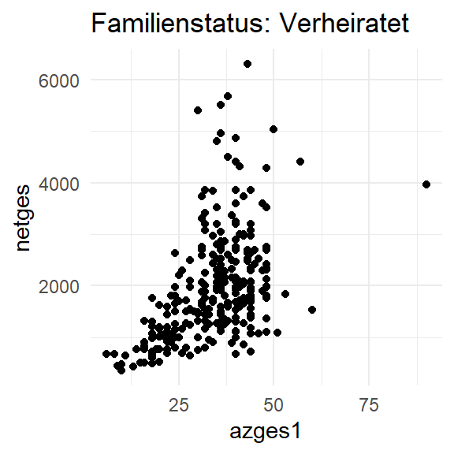
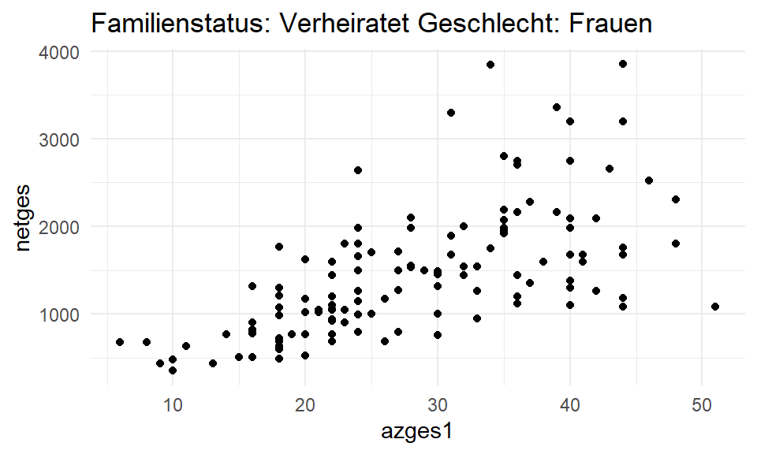
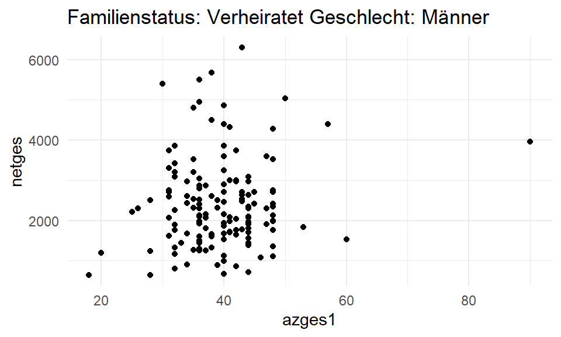
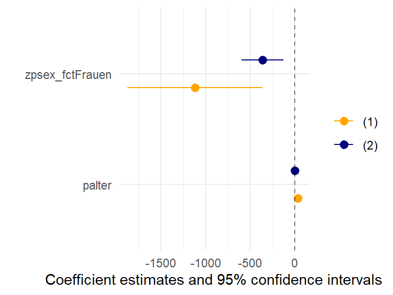

pend12 <- haven::read_dta("./orig/PENDDAT_cf_W13.dta",
col_select = c("pnr","welle","netges","schul2","azges1","palter","famstand","zpsex","statakt","hnr")) %>%
filter(netges > 0, schul2 %in% 2:7, palter > 0, famstand > 0, azges1 > 0 , welle == 13) %>%
mutate(
across(matches("palter|netges|azges1"),~as.numeric(.x)),
famstand_fct = factor(famstand,levels = 1:5,labels = c("Ledig","Verheiratet", "Verheiratet getr. lebd.", "Geschieden", "Verwitwet")),
schul2_fct = factor(schul2,levels = 2:7, labels = c("ohne","Förderschule","Hauptschule","Mittlere Reife","FOS/BOS","Abi")),
statakt_fct = factor(statakt,levels = 1:3, labels = c("erbwerbstätig","arbeitslos","inaktiv")),
zpsex_fct = factor(zpsex,levels = 1:2,labels =c("Männer","Frauen")))12 Schleifen & Funktionen
Schleifen im Sinne von for()-Loops werden in R selten verwendet.
Stattdessen werden meist Funktionen function(...) mit Hilfe von lapply() bzw. map() aus {purrr}/{tidyverse} 1 über eine Reihe von Werten geschleift.
Die grundlegende Idee ist zunächst die gleiche wie bei klassischen for()-Loops:
- wir legen fest, was gemacht werden soll (in einer
function()) - wir erstellen eine Serie an Werten
- und wenden die
function()auf diese an
Grundsätzlich können wir in R solche Schleife auf wirklich alles anwenden: data.frames(), Vektoren, lists. Das macht das Vorgehen sehr flexibel und kann uns beispielsweise helfen, eine Modellserie zu erstellen, Grafiken für verschiedene Untergruppen erstellen, oder …
12.1 Plot-Serien
Wir möchten die gleiche für eine Reihe unterschiedlicher Untergruppen erstellen: beispielsweise möchten wir folgende Grafik für alle Ausprägungskombinationen von famstand und zpsex erstellen:
pend12 %>%
ggplot(aes(x = azges1, y = netges)) +
geom_point() +
theme_minimal()
Wir erstellen zunächst eine function(), welche zwei Argumente enthält. Diese geben wir dann in einen filter()-Befehl innerhalb der function() an und verwenden sie außerdem, um einen Titel zu generieren. Das können wir mit paste0(), welches fixe Inputs und Vektoren-Inputs zu einem character zusammenfügt.2
plot_fun1 <- function(famstat_filter){
pend12 %>%
filter(famstand_fct == famstat_filter) %>%
ggplot(aes(x = azges1, y = netges)) +
geom_point() +
theme_minimal() +
labs(title = paste0("Familienstatus: ",famstat_filter))
}Mit dieser function() können wir nur leicht die jeweiligen Plots erstellen:
plot_fun1(famstat_filter = "Ledig")
Wie kommen wir jetzt aber an alle Kombinationen? In einem ersten Schritt können wir mit lapply() eine Schleife über die Ausprägungen von famstat_fct erstellen und die Plots für die Frauen erstellen:
levels(pend12$famstand_fct)[1] "Ledig" "Verheiratet"
[3] "Verheiratet getr. lebd." "Geschieden"
[5] "Verwitwet" fam_plots <- lapply(levels(pend12$famstand_fct), plot_fun1)
class(fam_plots)[1] "list"fam_plots[[1]] # ersten Plot aus der fam_plots-Liste aufrufen
Etwas übersichtlicher ist das ganze, wenn wir die Plots in einem data.frame( bzw. einem tibble) ablegen neben einer Spalte mit den Ausprägungen:
plot_df <-
data.frame(famstand_fct = levels(pend12$famstand_fct)) %>%
mutate(plots = map(famstand_fct,plot_fun1))
# head(plot_df)
plot_df %>% filter(famstand_fct == "Verheiratet") %>% pull(plots)[[1]]
Was jetzt aber, wenn wir mehrere Variablen berücksichtigen möchten?
Dazges1u erstellen wir zunächst eine neue function() mit mehreren Argumenten und erweitern auch den filter() und paste0()-Befehl innerhalb der Funktionen:
plot_fun2 <- function(famstat_filter, zpsex_filter){
pend12 %>%
filter(famstand_fct == famstat_filter, zpsex_fct == zpsex_filter) %>%
ggplot(aes(x = azges1, y = netges)) +
geom_point() +
theme_minimal() +
labs(title = paste0("Familienstatus: ",famstat_filter, " Geschlecht: ", zpsex_filter))
}Mit expand_grid können wir sehr schnell einen data.frame mit allen Kombinationen der angegebenen Vektoren erstellen:
expand_grid(famstand_fct = levels(pend12$famstand_fct),
zpsex_fct = levels(pend12$zpsex_fct))# A tibble: 10 × 2
famstand_fct zpsex_fct
<chr> <chr>
1 Ledig Männer
2 Ledig Frauen
3 Verheiratet Männer
4 Verheiratet Frauen
5 Verheiratet getr. lebd. Männer
6 Verheiratet getr. lebd. Frauen
7 Geschieden Männer
8 Geschieden Frauen
9 Verwitwet Männer
10 Verwitwet Frauen Diese beiden Spalten geben wir jetzt in unseren map()-Befehl - allerdings haben wir ja jetzt zwei Input-Argumente, nicht nur eines. Daher verwenden wir pmap(), welches mehrere Inputs verwenden kann:
plot_df2 <-
expand_grid(famstand_fct = levels(pend12$famstand_fct),
zpsex_fct = levels(pend12$zpsex_fct)) %>%
mutate(plots = pmap(list(famstat_filter= famstand_fct,zpsex_filter = zpsex_fct), # Variablen mit = den Funktions-Argumenten zuweisen
plot_fun2))plot_df2 %>% filter(famstand_fct == "Verheiratet",zpsex_fct == "Frauen") %>% pull(plots)[[1]]
plot_df2 %>% filter(famstand_fct == "Verheiratet",zpsex_fct == "Männer") %>% pull(plots)[[1]]
12.1.1 Übung
12.2 Verschiedene Modelle auf die gleichen Daten als function() mit map() anwenden
Wir möchten folgende Modelle alls auf Basis des PASS CampusFiles schätzen:
- Modell 1 =
netges ~ azges1 - Modell 2 =
netges ~ azges1 + zpsex_fct - Modell 3 =
netges ~ azges1 + zpsex_fct + schul2_fct - Modell 4 =
netges ~ azges1 + zpsex_fct + schul2_fct + palter
Natürlich würde so etwas funktionieren, würde aber vier separate Modelle erstellen:
mod1 <- lm(netges ~ azges1, data = pend12)
mod2 <- lm(netges ~ azges1 + zpsex_fct, data = pend12)
mod3 <- lm(netges ~ azges1 + zpsex_fct + schul2_fct, data = pend12)
mod4 <- lm(netges ~ azges1 + zpsex_fct + schul2_fct + palter, data = pend12)Wir definieren dann eine function(), in der wir angeben, dass das angegebene Argument die Formel für ein lm() sein soll - das Ergebnis dieses lm() lassen wir uns dann ausgeben.
mod_function <- function(modx){
mx <- lm(formula = modx,data = pend12)
return(mx)
}Als Test können wir mod_function() jetzt einmal verwenden:
mod_function("netges ~ azges1") %>% summary() # sieht gut aus
Call:
lm(formula = modx, data = pend12)
Residuals:
Min 1Q Median 3Q Max
-1636 -778 -313 260 86745
Coefficients:
Estimate Std. Error t value Pr(>|t|)
(Intercept) 1645.852 504.949 3.259 0.00118 **
azges1 7.758 14.233 0.545 0.58592
---
Signif. codes: 0 '***' 0.001 '**' 0.01 '*' 0.05 '.' 0.1 ' ' 1
Residual standard error: 3624 on 613 degrees of freedom
Multiple R-squared: 0.0004844, Adjusted R-squared: -0.001146
F-statistic: 0.2971 on 1 and 613 DF, p-value: 0.5859Im nächsten Schritt erstellen wir jetzt einen Vektor mit verschiedenen Modellvarianten:
mdls <- c(
"Modell 1" = "netges ~ azges1",
"Modell 2" = "netges ~ azges1 + zpsex_fct",
"Modell 3" = "netges ~ azges1 + zpsex_fct + schul2_fct",
"Modell 4" = "netges ~ azges1 + zpsex_fct + schul2_fct + palter"
)mdls Modell 1
"netges ~ azges1"
Modell 2
"netges ~ azges1 + zpsex_fct"
Modell 3
"netges ~ azges1 + zpsex_fct + schul2_fct"
Modell 4
"netges ~ azges1 + zpsex_fct + schul2_fct + palter" Mit map wenden wir unsere mod_function jetzt auf den Modell-Vektor an:
mods <- map(mdls,mod_function)
mods$`Modell 1`
Call:
lm(formula = modx, data = pend12)
Coefficients:
(Intercept) azges1
1645.852 7.758 mods$`Modell 2`
Call:
lm(formula = modx, data = pend12)
Coefficients:
(Intercept) azges1 zpsex_fctFrauen
2848.48 -13.22 -1001.75 Außerdem können wir uns alle Modelle auch direkt in modelsummary ausgeben lassen:
library(modelsummary)
modelsummary(mods,stars = T,gof_omit = "IC|RM|Log",output = "flextable")
| Modell 1 | Modell 2 | Modell 3 | Modell 4 |
|---|---|---|---|---|
(Intercept) | 1645.852** | 2848.480*** | 1791.272+ | 435.791 |
(504.949) | (632.800) | (939.483) | (1085.866) | |
azges1 | 7.758 | -13.219 | -12.710 | -12.526 |
(14.233) | (15.655) | (15.740) | (15.676) | |
zpsex_fctFrauen | -1001.751** | -1040.178** | -1097.517*** | |
(321.565) | (327.598) | (327.076) | ||
schul2_fctFörderschule | 21.987 | -541.256 | ||
(2652.271) | (2651.220) | |||
schul2_fctHauptschule | 670.337 | 461.187 | ||
(808.122) | (809.263) | |||
schul2_fctMittlere Reife | 866.103 | 758.984 | ||
(766.548) | (764.622) | |||
schul2_fctFOS/BOS | 1362.607 | 1338.477 | ||
(882.266) | (878.674) | |||
schul2_fctAbi | 1509.094* | 1536.568* | ||
(764.996) | (761.916) | |||
palter | 32.454* | |||
(13.196) | ||||
Num.Obs. | 615 | 615 | 615 | 615 |
R2 | 0.000 | 0.016 | 0.029 | 0.038 |
R2 Adj. | -0.001 | 0.013 | 0.017 | 0.025 |
F | 0.297 | 5.003 | 2.551 | 3.007 |
+ p < 0.1, * p < 0.05, ** p < 0.01, *** p < 0.001 | ||||
12.2.1 Übung
12.3 Das gleiche Modell auf verschiedene Datensets anwenden
Der zweite Fall ist das gleiche Modell auf verschiedene Datensätze anzuwenden - wer kennt es nicht:
“Habt ihr das auch mal getrennt für Ost/West gerechnet?”
…dafür hilft uns nest(.by =) - damit können wir den Datensatz entlang einer Variable splitten und zusammenfassen:
hh_dat <- haven::read_dta("./orig/HHENDDAT_cf_W13.dta", col_select = c("hnr","welle","region"))
# p_reg <- haven::read_dta("./orig/p_register_cf_W13.dta", col_select = c("pnr","hnr"))
pend12_ow <-
pend12 %>%
left_join(hh_dat,by = c("hnr","welle")) %>%
mutate(east = ifelse(region == 2,"east","west")) %>%
select(netges,azges1,schul2_fct,palter,zpsex_fct, east)
pend12_ow_nest <-
pend12_ow %>%
nest(.by=east)In der Spalte data sind jetzt also die Datensätze für Ost und West enthalten:
head(pend12_ow_nest$data[[1]],n=3)# A tibble: 3 × 5
netges azges1 schul2_fct palter zpsex_fct
<dbl> <dbl> <fct> <dbl> <fct>
1 1020 21 Mittlere Reife 35 Frauen
2 715 44 ohne 57 Männer
3 3195 44 Abi 63 Frauen head(pend12_ow_nest$data[[2]],n=3)# A tibble: 3 × 5
netges azges1 schul2_fct palter zpsex_fct
<dbl> <dbl> <fct> <dbl> <fct>
1 500 21 Mittlere Reife 43 Männer
2 1380 40 Mittlere Reife 61 Männer
3 1120 40 Hauptschule 55 Männer Auf den so gesplitteten Datensatz können wir mit map() ein lm()-Modell anwenden:
mod_ow <-
pend12_ow_nest %>%
mutate(model = map(data, function(data) {
lm("netges ~ palter + zpsex_fct", data = data) # ad-hoc function --> siehe tip)
}))
adhoc
function
Wir können die Funktion auch im gleichen Zug wie map() definieren, indem wir einfach mit {} die function() anhängen:
map(input, function(x) {
... # letzter Schritt in function wird als Ergebnis ausgegeben
})Das Ergebnis ist ein data.frame/tibble, welcher in der Spalte model die lm-Objekte enthält:
mod_ow# A tibble: 2 × 3
east data model
<chr> <list> <list>
1 west <tibble [461 × 5]> <lm>
2 east <tibble [154 × 5]> <lm> mod_ow$model[1][[1]]
Call:
lm(formula = "netges ~ palter + zpsex_fct", data = data)
Coefficients:
(Intercept) palter zpsex_fctFrauen
1165.84 31.32 -1120.64 modelsummary::modelplot(mod_ow$model,coef_omit = "Intercept") +
geom_vline(aes(xintercept = 0), linetype = 2, alpha = .5) +
scale_color_manual(values = c("orange","navy")) 
modelsummary(mod_ow$model,stars = T,gof_omit = "IC|RM|Log",output = "flextable")
| (1) | (2) |
|---|---|---|
(Intercept) | 1165.837 | 1851.896*** |
(797.408) | (237.250) | |
palter | 31.321+ | -2.365 |
(17.011) | (5.292) | |
zpsex_fctFrauen | -1120.636** | -365.447** |
(384.553) | (118.832) | |
Num.Obs. | 461 | 154 |
R2 | 0.024 | 0.062 |
R2 Adj. | 0.019 | 0.050 |
+ p < 0.1, * p < 0.05, ** p < 0.01, *** p < 0.001 | ||
12.3.1 Übung {#ue12_02)
12.4 Übungen
pend_ue12 <-
haven::read_dta("./orig/PENDDAT_cf_W13.dta",
col_select = c("pnr","welle","zpsex","netges","schul2","bilzeit","azges1","palter") ) %>%
filter(netges > 0, schul2 %in% 2:7, palter > 0, bilzeit > 0, azges1 > 0 , welle == 13) %>%
mutate(
across(matches("palter|netges|azges1|bilzeit"),~as.numeric(.x)),
schul2_fct = factor(schul2,levels = 2:7, labels = c("ohne","Förderschule","Hauptschule","Mittlere Reife","FOS/BOS","Abi")),
zpsex_fct = factor(zpsex,levels = 1:2,labels =c("Männer","Frauen")))12.4.1 Übung 1
- Erstellen Sie einen Scatterplot für die Variablen
bilzeitundpalter
12.4.2 Übung 2
Erstellen Sie eine Funktion, welche den
data.frameetb_ue12für einlm()verwendet und als Input eine Modellformel verwendet. Testen Sie Ihre Funktion mit folgender Formel:
azges1 ~ zpsex_fct + ausb + palter(Denken Sie daran, die Formula in""zu setzen).Erstellen Sie eine Liste mit folgenden Modellen:
- Modell 1
"azges1 ~ zpsex_fct", - Modell 2
"azges1 ~ zpsex_fct + schul2_fct", - Modell 3
"azges1 ~ zpsex_fct + schul2_fct + palter"
- Modell 1
Verwenden Sie
map()und die erstellte Funktion, um die Modelle zu schätzen und inmodelsummary()anzuzeigen
12.4.3 Übung 3
Berechnen Sie das Modell "azges1 ~ schul2_fct + palter + I(palter^2)" getrennt für Männer und Frauen (zpsex_fct).
12.5 Anhang
12.5.1 .x in map()
Im {tidyverse} stellt das Paket {purrr} map() zur Verfügung, das function(x) { ... x} auf ~ und .x abkürzen lässt:
mods <- map(mdls,~lm(formula = .x,data = pend12))Wer mehr über {purrr} und map() erfahren möchte, findet hier eine hervorragende Einführung.
12.5.2 weitere Beispiele für function()
12.5.2.1 alle Datensätze aus einem Verzeichnis einzulesen
# Namen aller csv-Dateien aus einem Verzeichnis
files <- list.files(path = "/pfad/...", pattern = ".csv$",full.names = T)
daten_list <-
map(files, function(x){
read.csv(x,header = T,sep = ";")
})12.5.3 Loop mit for
for(i in 1:8){
print(i)
}[1] 1
[1] 2
[1] 3
[1] 4
[1] 5
[1] 6
[1] 7
[1] 812.5.4 loop über Variablen
Möchten wir über Variablen loopen, müssen wir R explizit mitteilen, dass die mitgegebenen strings als Variablen zu verstehen sind:
for(v in c("schul2_fct","zpsex_fct","statakt_fct")){
pend12 %>% count(v) %>% print()
}Error in `count()`:
! Must group by variables found in `.data`.
✖ Column `v` is not found.Das können wir mit !!rlang::sym(v):
for(v in c("schul2_fct","zpsex_fct","statakt_fct")){
pend12 %>% count(!!rlang::sym(v)) %>% print()
}# A tibble: 6 × 2
schul2_fct n
<fct> <int>
1 ohne 25
2 Förderschule 2
3 Hauptschule 98
4 Mittlere Reife 228
5 FOS/BOS 51
6 Abi 211
# A tibble: 2 × 2
zpsex_fct n
<fct> <int>
1 Männer 314
2 Frauen 301
# A tibble: 3 × 2
statakt_fct n
<fct> <int>
1 erbwerbstätig 609
2 arbeitslos 2
3 inaktiv 4